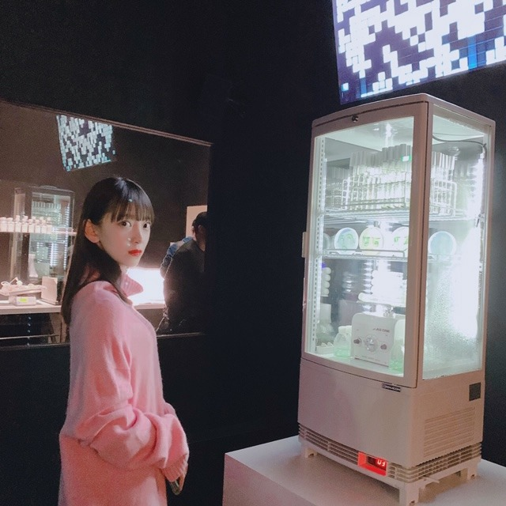
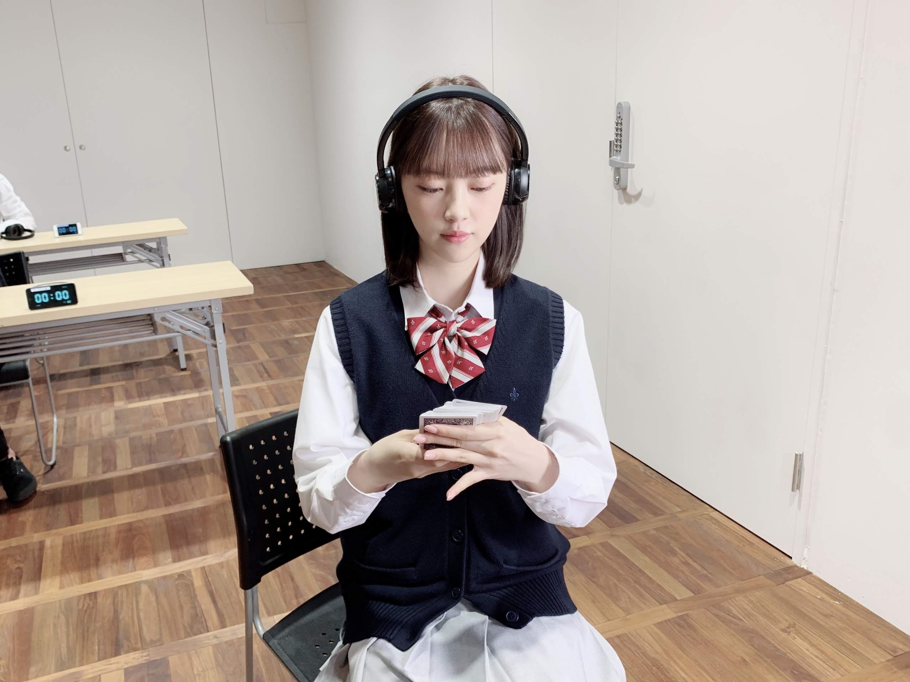
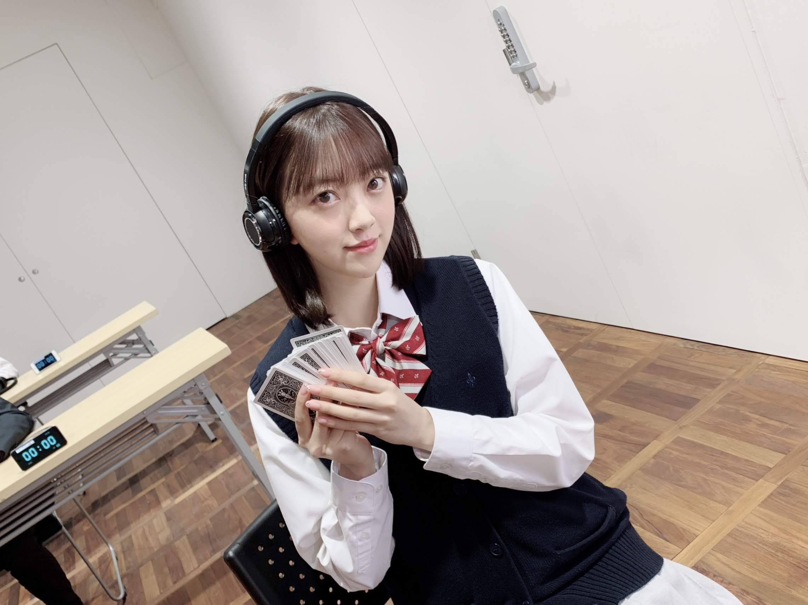
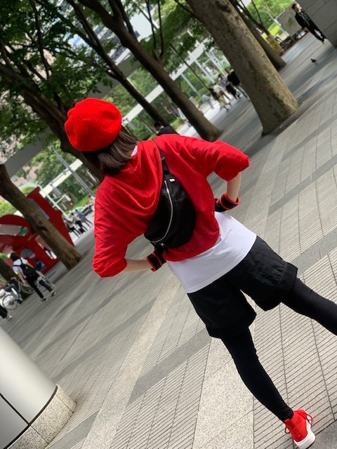
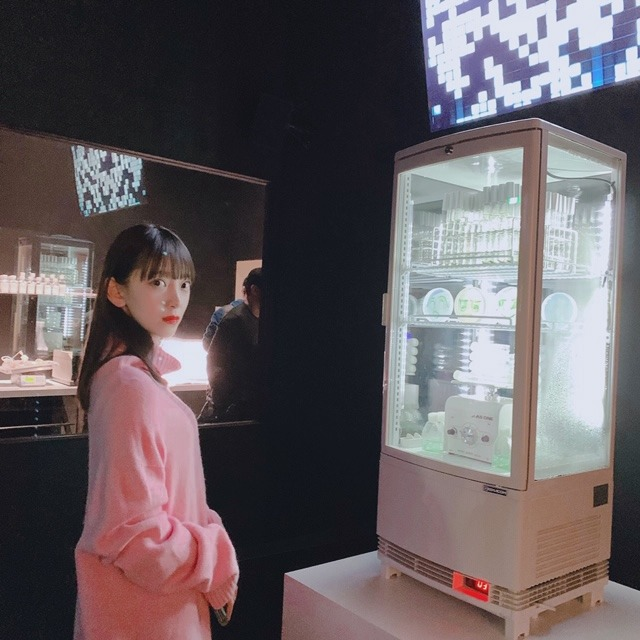
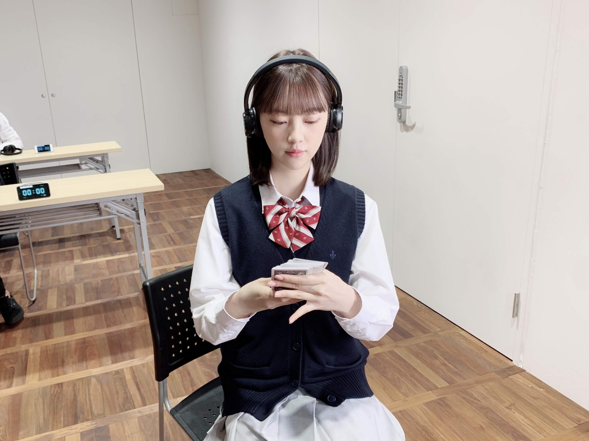
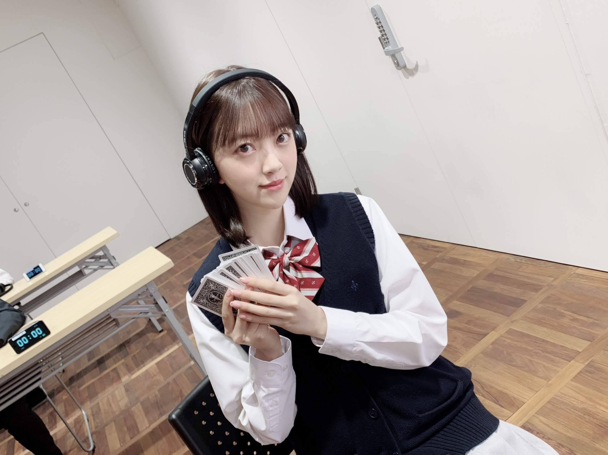
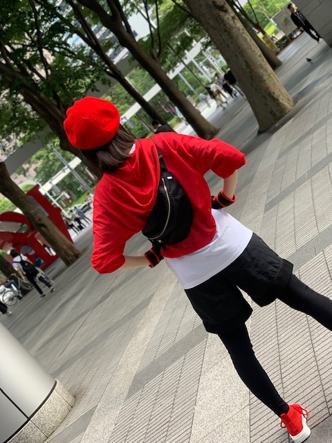

2020/0127Mon丸メガネ

ブログ、握手会、Instagram、755で
多かった質問を答えます
好きなブランドは？
...CLANEとCOSはよく買います
あとはブランド関係なく見て気に入ったものを着るかなぁ
私服の詳細はInstagram @horimiona_2nd へ
好きな男性の服装は？
...ワントーン・無地でめちゃめちゃシンプルな服装！
セットアップとかニットとかパーカーとかTシャツとか
あとスーツが似合う人もかっこいいなと思います
春だし！
好きな男性の髪型は？
...さらさらストレートかセンター分け
銀魂の沖田総悟さんの髪型、髪色が理想です
最近気になってるものやハマってることは？
...カレー・お抹茶の飲み比べ・焼き魚・写真を現像してアルバムを作ること・スニーカー・話すオウムを飼ってみたい・伊達メガネ
よく聞く音楽は？
...JPOPだとback numberさん・RIPSLYMEさん・YUIさん
KPOPだとIUさん・TWICEさん・IZ*ONEさん・RedVelvetさん・TXTさん・ASTROさん
おすすめの映画は？
...Netflixにあるホットギミックはどうですか？
見てね
あとは、海街diary・勝手にふるえてろ・湯を沸かすほどの熱い愛・ヘイフラワーとキルトシュー・スパイ・バイオハザードかな
またします！
質問送ってください
お知らせ
明日、Eテレ18:55〜
沼にハマってきいてみた
にでます！サバンナの高橋さんと松井愛莉さんがお優しくて楽しかったです
そして
明日の24:00〜
FODにて 乃木坂シネマズでわたしが主演をさせていただいている「納品ウォーズ」が公開されます
是非見てください(^.^)
初めてのアクションです！


文武両道です(役の中での話)

感想お待ちしています！
そして
琴子の卒業発表がありました
びっくりしたのですが
琴子が決めた未来、
背中を押してあげられるようにわたしたちが支えたいし卒業してもずっとメンバーで同期で仲間だというのを忘れないでほしいな...
すぐに連絡したのですが、まだ実感がわかずです
そして2期ライブ。絶対に盛り上げたいな...
頑張ろう！ね！2期ちゃん
では

ブログ、握手会、Instagram、755で
多かった質問を答えます
好きなブランドは？
...CLANEとCOSはよく買います
あとはブランド関係なく見て気に入ったものを着るかなぁ
私服の詳細はInstagram @horimiona_2nd へ
好きな男性の服装は？
...ワントーン・無地でめちゃめちゃシンプルな服装！
セットアップとかニットとかパーカーとかTシャツとか
あとスーツが似合う人もかっこいいなと思います
春だし！
好きな男性の髪型は？
...さらさらストレートかセンター分け
銀魂の沖田総悟さんの髪型、髪色が理想です
最近気になってるものやハマってることは？
...カレー・お抹茶の飲み比べ・焼き魚・写真を現像してアルバムを作ること・スニーカー・話すオウムを飼ってみたい・伊達メガネ
よく聞く音楽は？
...JPOPだとback numberさん・RIPSLYMEさん・YUIさん
KPOPだとIUさん・TWICEさん・IZ*ONEさん・RedVelvetさん・TXTさん・ASTROさん
おすすめの映画は？
...Netflixにあるホットギミックはどうですか？
見てね
あとは、海街diary・勝手にふるえてろ・湯を沸かすほどの熱い愛・ヘイフラワーとキルトシュー・スパイ・バイオハザードかな
またします！
質問送ってください
お知らせ
明日、Eテレ18:55〜
沼にハマってきいてみた
にでます！サバンナの高橋さんと松井愛莉さんがお優しくて楽しかったです
そして
明日の24:00〜
FODにて 乃木坂シネマズでわたしが主演をさせていただいている「納品ウォーズ」が公開されます
是非見てください(^.^)
初めてのアクションです！


文武両道です(役の中での話)

感想お待ちしています！
そして
琴子の卒業発表がありました
びっくりしたのですが
琴子が決めた未来、
背中を押してあげられるようにわたしたちが支えたいし卒業してもずっとメンバーで同期で仲間だというのを忘れないでほしいな...
すぐに連絡したのですが、まだ実感がわかずです
そして2期ライブ。絶対に盛り上げたいな...
頑張ろう！ね！2期ちゃん
では
2020/01/27 17:02
コメント(265)
堀さん、おはようございます。
『乃木坂シネマズ』は地上波でも放送が始まり、今夜が第二回。少し長めのPVを観ている気分で楽しみたいと思っています。堀さんの文武両道ぶりも楽しみにしています。
琴子さんの卒業発表は僕らにとっても大きな驚きでした。二期生として、研究生として、そして何より乃木坂46メンバーとして、これまでがんばってきた佐々木さんのことをいつまでも変わらず応援していきたいと願うばかりです。
8thバースデイライブ、そして二期生単独ライブと、佳き思い出をたくさんたくさん作ってほしいです。
ではまたコメント寄せますね。今日も元気にがんばりましょう。
さらばだ、また会おう！（気球に乗って去りぬ〜）
『乃木坂シネマズ』は地上波でも放送が始まり、今夜が第二回。少し長めのPVを観ている気分で楽しみたいと思っています。堀さんの文武両道ぶりも楽しみにしています。
琴子さんの卒業発表は僕らにとっても大きな驚きでした。二期生として、研究生として、そして何より乃木坂46メンバーとして、これまでがんばってきた佐々木さんのことをいつまでも変わらず応援していきたいと願うばかりです。
8thバースデイライブ、そして二期生単独ライブと、佳き思い出をたくさんたくさん作ってほしいです。
ではまたコメント寄せますね。今日も元気にがんばりましょう。
さらばだ、また会おう！（気球に乗って去りぬ〜）
未央奈ちゃんありがとうございます‼お仕事頑張って下さい！ありがとうございます‼頑張ります‼頑張って下さい。気をつけて下さい！頑張ります‼頑張って下さい。
最近自分のクラス（中２）で乃木坂の知名度が上がってきてて嬉しいです
ヘアケアやダイエットについて詳しく教えてもらえますか?
いろいろ試したけどあまり効果がなくて…
ヘアケアやダイエットについて詳しく教えてもらえますか?
いろいろ試したけどあまり効果がなくて…
未央奈、可愛い、そのバックショット。
日に日に推し度が増していって
困っています。
2期生の先陣に立って突っ走ってきた
未央奈ちゃんは、同期がまた一人抜ける事
をどの様に感じてるのだろう・・・
きっと、いろんな感情を内に閉じ込め
いつもと変わらぬ未央奈スマイルで
琴子ちゃんを送り出すのだろう。
あれっ？こんな空気を重くするつもり
なかったのになー。
またコメントしまーす。
日に日に推し度が増していって
困っています。
2期生の先陣に立って突っ走ってきた
未央奈ちゃんは、同期がまた一人抜ける事
をどの様に感じてるのだろう・・・
きっと、いろんな感情を内に閉じ込め
いつもと変わらぬ未央奈スマイルで
琴子ちゃんを送り出すのだろう。
あれっ？こんな空気を重くするつもり
なかったのになー。
またコメントしまーす。
質問です！
未央奈ちゃんのストレス解消法は何ですか？
未央奈ちゃんのストレス解消法は何ですか？
ブログ更新ありがとう！2期生ライブ頑張ってください！応援してます！大好きです⸜❤︎⸝
未央奈ちゃん更新ありがとー！
質問返しありがとう！
好きな男性の髪＆服 参考にしなきゃ。
沖田くんの髪色かー。
染められるもんなら染めてみたい。
よし会社やめよう。笑
乃木坂シネマズちゃんと見るね！
よし今日も１日頑張ろう！
未央奈ちゃんも頑張ってね！
ファイト未央奈ちゃん！！
琴子ちゃんの卒業寂しい。
でもしっかり考えたうえでの選択、
一緒に背中を押してあげようね！
2期生ライブ楽しみにしてます！
ではでは～
質問返しありがとう！
好きな男性の髪＆服 参考にしなきゃ。
沖田くんの髪色かー。
染められるもんなら染めてみたい。
よし会社やめよう。笑
乃木坂シネマズちゃんと見るね！
よし今日も１日頑張ろう！
未央奈ちゃんも頑張ってね！
ファイト未央奈ちゃん！！
琴子ちゃんの卒業寂しい。
でもしっかり考えたうえでの選択、
一緒に背中を押してあげようね！
2期生ライブ楽しみにしてます！
ではでは～
琴子ちゃんの卒業式悲しい
2期生が大好き❤️
2期生が大好き❤️
堀ちゃん、ブログ更新ありがとう〜
2期生ライブ、絶対行くよ
堀ちゃん、大好きだよー
2期生ライブ、絶対行くよ
堀ちゃん、大好きだよー
今日も可愛い！
2期生ライブの成功を祈ります！
2期生ライブの成功を祈ります！
琴子の笑顔が見たい！
たくさん話してね！
たくさん話してね！
未央奈さん、こんにちは
写真の感想
今日はオフ日、天気がいいから
久しぶりにサイクリングでも
しようかな～って感じですかね
前姿が気になってます(^_^)/
卒業発表が相次いでますが
それでも乃木坂46は
前に進み続けます
卒業していく皆さんを後押しして
笑顔で送り出しましょ(^_^)
乃木坂46
これからも応援していきます！
写真の感想
今日はオフ日、天気がいいから
久しぶりにサイクリングでも
しようかな～って感じですかね
前姿が気になってます(^_^)/
卒業発表が相次いでますが
それでも乃木坂46は
前に進み続けます
卒業していく皆さんを後押しして
笑顔で送り出しましょ(^_^)
乃木坂46
これからも応援していきます！
未央奈さんブログ更新ありがとうございます。僕は２期生のエースの未央奈さんが好きです。沼にはまってみた したよ。乃木坂46 はフジテレビで２月に放送するから２月に見るよ。 ⛄ から体調くずさ無いように頑張って✊ ✊。可愛い❤️。
相変わらず可愛いですね。
握手会とかの質問事項覚えていたんですね。
忘れっぽいって思ってました。
まぁ、それはそうと2期生ライブできるのは、未央奈を初め2期生の、頑張りがぐいぐい来てるからだと思うよ。チケット当てたいです。
バスラは、初日と最終日ゲットしてるので、あらかじめ語られるロマンスを生で聞きたいなぁ。
初日に期待してます。
何か、2期生単独ライブの開催って、工事中の掘り下げ中の頃からしたら凄い事だよね。
未央奈の頑張りが、華開く時だね。是非現場に駆けつけたいです。
では
握手会とかの質問事項覚えていたんですね。
忘れっぽいって思ってました。
まぁ、それはそうと2期生ライブできるのは、未央奈を初め2期生の、頑張りがぐいぐい来てるからだと思うよ。チケット当てたいです。
バスラは、初日と最終日ゲットしてるので、あらかじめ語られるロマンスを生で聞きたいなぁ。
初日に期待してます。
何か、2期生単独ライブの開催って、工事中の掘り下げ中の頃からしたら凄い事だよね。
未央奈の頑張りが、華開く時だね。是非現場に駆けつけたいです。
では
ブログ更新ありがとうございます
めっちゃ可愛いです
めっちゃ可愛いです
堀未央奈さん。こんにちは。
未央奈さんのブログをよく読まないでコメント読んだので、「沼」が沢山出たきて、何かなとおもいました。Eテレ予約しました。危なかった〜。
ブログの制服姿。綺麗です。
赤い帽子、服、靴に黒短パンの後ろ姿。スタイル抜群です。可愛いです。
またコメントします。
0606より
未央奈さんのブログをよく読まないでコメント読んだので、「沼」が沢山出たきて、何かなとおもいました。Eテレ予約しました。危なかった〜。
ブログの制服姿。綺麗です。
赤い帽子、服、靴に黒短パンの後ろ姿。スタイル抜群です。可愛いです。
またコメントします。
0606より
未央奈ちゃんはホント綺麗さと可愛いさ半端ないよね!
マジ女神♪
マジ女神♪
堀ちゃんブログありがとう！
琴子ちゃんの卒業寂しいですね
最後まで乃木坂の琴子ちゃんを
応援したいと思います。
琴子ちゃんの卒業寂しいですね
最後まで乃木坂の琴子ちゃんを
応援したいと思います。
2期生ライブみーんなで気合入れて伝説に！！
こんにちはお疲れさま☺
昨日に続きのコメントします☺
ニュースで見たけど今日は昨夜からの寒波で関東は一部の地域で雪が降ってるみたいやね。
仕事やお出かけは足元気をつけてね。
ではではまたね✨
体調気をつけてな✨
ほなね、堀ちゃん☺
昨日に続きのコメントします☺
ニュースで見たけど今日は昨夜からの寒波で関東は一部の地域で雪が降ってるみたいやね。
仕事やお出かけは足元気をつけてね。
ではではまたね✨
体調気をつけてな✨
ほなね、堀ちゃん☺
二期ライブ楽しんでね♪
チケット取るの頑張らねば(笑)
チケット取るの頑張らねば(笑)
Netflixでホットギミックみたよ！！
やっぱ大好きな映画
やっぱ大好きな映画
堀ちゃんこんにちは(*･ω･)ﾉ
いつもお疲れ様です。
インスタにブログにいつも見てます！
最近Netflixでホットギミック観ました！
今はアラサーの私なんですが、
私が中学生時代にクラスの女子で
凄く流行ってた漫画です！！
初ちゃんめちゃめちゃ可愛かった…
映画の中にいたのは堀ちゃんじゃなく
完全に初ちゃんでした…
昔読んでいた漫画の初ちゃんは
その時代にあった初ちゃんで
映画の中の初ちゃんは今現在を生きる
初ちゃんだったと思いました。
とにかく漫画の世界を壊さずに
現代版のホットギミックだったなと
私は感じました。
なんだか観てる間ずっとドキドキしてたと
思います。若い頃の自分の気持ちを
思い出しました。
今はテレビで見る堀ちゃんもSNSや
ブログで見る堀ちゃん全部が
初ちゃんに見えてしまいます…笑
あー初ちゃん髪伸びたなーとか…笑
また繰り返し何回も観ます。
上映期間中にどうしても行けなかったので
Netflixで配信が決まった時はめっちゃ
嬉しかったです(；ω；)！！
この気持ちを自分の中で留めておくことができなくなったのでコメントさせてもらいました。
とにかく初ちゃん大好き！！
大切な思い出の漫画を蘇らせてくれてありがとう！！
ちょっと若返ったかなーとか勝手に思ってます笑
ヲタはつづくよどこまでも
未央奈ちゃんこれからも乃木坂46を応援します‼頑張ります‼お仕事頑張って下さい！気をつけて下さい。頑張って下さい！
今日、たくさんテレビに出るみたいで何だか
嬉しくなりますね！
関東でも雪が降ったみたいで、23区内だと練馬区
後、俺が住んでる所の近くでも降ったらしいんだよ
嬉しくなりますね！
関東でも雪が降ったみたいで、23区内だと練馬区
後、俺が住んでる所の近くでも降ったらしいんだよ
いよいよ明日、堀ちゃんの初アクションのドラマ放送日ですね。レコメンもあるから楽しみでしょうがないって！遠足の前日みたいな気分 アゲアゲテンション
FOD楽しみにしてますね。
ベレー帽戦士。
ベレー帽戦士。
あ、そうだ
最近の乃木坂工事中での三つ編み、、、
三つ編みっていうですかね？
めっちゃかわいいね。
初めてのですか？この髪型プラス丸メガネなら、どんな感じになるんでしょう。
銀魂でも観るのですか、じゃあ銀魂の実写版映画見たことありましたか。無茶苦茶な設定と発展で面白い。好きです。アニメも。
最近の乃木坂工事中での三つ編み、、、
三つ編みっていうですかね？
めっちゃかわいいね。
初めてのですか？この髪型プラス丸メガネなら、どんな感じになるんでしょう。
銀魂でも観るのですか、じゃあ銀魂の実写版映画見たことありましたか。無茶苦茶な設定と発展で面白い。好きです。アニメも。
日本語の使い方時々間違えったら、
ごめんなさい。
もう一度二期生単独ライブの大成功を心から願ってます。卒業近いの佐々木さんと皆さん
頑張って。
二期また一人減りました寂しい。
ごめんなさい。
もう一度二期生単独ライブの大成功を心から願ってます。卒業近いの佐々木さんと皆さん
頑張って。
二期また一人減りました寂しい。
ライブ頑張ってね！
2期生ライブ楽しみにしてます！
チケットが当たるといいな〜！
チケットが当たるといいな〜！
また一人・・だんだんと寂しくなるけど、しっかりと応援してあげないとね！
こんばんは。
ブログ更新ありがとうございます
琴子さん卒業ですか…
白石さんの卒業発表があったばかりなのに寂しい限りです。
未央奈ちゃんはいつまでも頑張ってください✨
昨日、今日と雨で物凄く寒いですが体調崩さず頑張ってください！！
いつまでも応援してます
ブログ更新ありがとうございます
琴子さん卒業ですか…
白石さんの卒業発表があったばかりなのに寂しい限りです。
未央奈ちゃんはいつまでも頑張ってください✨
昨日、今日と雨で物凄く寒いですが体調崩さず頑張ってください！！
いつまでも応援してます
堀ちゃん！更新ありがとう！
堀ちゃん質問返し待ってたよ～!
自分も焼き魚好きよ～！！
鯖の塩焼きとか、秋刀魚とか
大好きですね！
堀ちゃんはお魚の種類は
何が好きなのかな？
また聞かせてね！
琴子の卒業には
びっくりしました
堀ちゃんと同様、
彼女が決めた道をしっかり
応援していきたいですね！
インフル流行ってるから
気をつけてね～！
次回の更新も楽しみにしてるよ！
では！
おやすみおな～！
堀ちゃん質問返し待ってたよ～!
自分も焼き魚好きよ～！！
鯖の塩焼きとか、秋刀魚とか
大好きですね！
堀ちゃんはお魚の種類は
何が好きなのかな？
また聞かせてね！
琴子の卒業には
びっくりしました
堀ちゃんと同様、
彼女が決めた道をしっかり
応援していきたいですね！
インフル流行ってるから
気をつけてね～！
次回の更新も楽しみにしてるよ！
では！
おやすみおな～！
みおな
今日もお疲れ様です
Netflix加入しました
ホットギミックは映画館でも観たけど、半年ぶりくらいに観ました
改めて、恋するのは簡単だけど、愛するのは難しいと感じさせられました
みおなの演技も光ってる映画だから、これからもドラマとかに出て欲しいです
納品ウォーズみたいけど、FODに加入するかは、Netflix入ったばかりだから検討中です（と言っても後ちょっとで配信だけど笑）
琴子の卒業発表は俺もびっくりしました
まいやんとかは、覚悟してた部分はあったけど、琴子は予想外だったので、びっくりでした
だけど、みおなの言う通り琴子の決めた道だから、頑張って欲しいですね
残りの琴子との活動を大切に過ごして下さい
そして2期生ライブも盛り上げて下さい
質問
最近あったいい事は何ですか？
ありがとうございました
今日もお疲れ様です
Netflix加入しました
ホットギミックは映画館でも観たけど、半年ぶりくらいに観ました
改めて、恋するのは簡単だけど、愛するのは難しいと感じさせられました
みおなの演技も光ってる映画だから、これからもドラマとかに出て欲しいです
納品ウォーズみたいけど、FODに加入するかは、Netflix入ったばかりだから検討中です（と言っても後ちょっとで配信だけど笑）
琴子の卒業発表は俺もびっくりしました
まいやんとかは、覚悟してた部分はあったけど、琴子は予想外だったので、びっくりでした
だけど、みおなの言う通り琴子の決めた道だから、頑張って欲しいですね
残りの琴子との活動を大切に過ごして下さい
そして2期生ライブも盛り上げて下さい
質問
最近あったいい事は何ですか？
ありがとうございました
質問です！
ショートとロングではどっちのほうが自分に似合っていると思いますか？
ショートとロングではどっちのほうが自分に似合っていると思いますか？
堀ちゃん、こんばんは＼(・∇・)／
必殺！質問便乗返し～～～！！
・好きなブランドは？
ブランド！？
たぶん、気にしたことがない・・・。
洋服は、色、デザイン、着やすさ、値段などを見て決めてる
・好きな女の子の髪型は？
学生のときからずっとセミロングのストレートだったなぁ。
いつも前髪を下ろしている子がたまにおでこを出していると、「おぉ！！」ってなるかも
・最近気になってるものやハマってることは？
最近、料理のバリエーションを増やそうと思ってる！
毎回スーパーへ行くたびに、ご飯のメニューに悩むんだよね。
そこで、しつもーん！
っていうか、メンバーみんなにアンケートを取ってくれてもいいよ。
Q.朝ごはんと夜ごはんのメニューは？
僕はいつも時短なり何なりでけっこう簡単に済ませちゃうことが多いんだよね。
必殺！質問便乗返し～～～！！
・好きなブランドは？
ブランド！？
たぶん、気にしたことがない・・・。
洋服は、色、デザイン、着やすさ、値段などを見て決めてる
・好きな女の子の髪型は？
学生のときからずっとセミロングのストレートだったなぁ。
いつも前髪を下ろしている子がたまにおでこを出していると、「おぉ！！」ってなるかも
・最近気になってるものやハマってることは？
最近、料理のバリエーションを増やそうと思ってる！
毎回スーパーへ行くたびに、ご飯のメニューに悩むんだよね。
そこで、しつもーん！
っていうか、メンバーみんなにアンケートを取ってくれてもいいよ。
Q.朝ごはんと夜ごはんのメニューは？
僕はいつも時短なり何なりでけっこう簡単に済ませちゃうことが多いんだよね。
ありがとう！
そういえばこの間、映画探してたらたまたまヘイフラワーのパッケージ見たんですけど、男子は、
見づらい感じでした・・・！？苦笑
映画リスト的に、ショート・タームとかエリン・ブロコビッチとかミリオンダラーベイビーとかポン・ジュノ監督の母なる証明とかヒューマンドラマ系オススメです！好きそう・・・。
因みに、映画ファン的に不可欠なスター・ウォーズサーガとかロードオブザリング三部作とかＭＣＵのマーベルシリーズとかは！？最高に面白いのに・・・。それでは体調に気をつけて頑張りましょう！！！
見づらい感じでした・・・！？苦笑
映画リスト的に、ショート・タームとかエリン・ブロコビッチとかミリオンダラーベイビーとかポン・ジュノ監督の母なる証明とかヒューマンドラマ系オススメです！好きそう・・・。
因みに、映画ファン的に不可欠なスター・ウォーズサーガとかロードオブザリング三部作とかＭＣＵのマーベルシリーズとかは！？最高に面白いのに・・・。それでは体調に気をつけて頑張りましょう！！！
後ろ姿でも１２０％可愛い子だってオーラでてるよね。
走りとか山登りの恰好？
温泉街でプリン買ってるような写メも可愛すぎるし
制服の写メも可愛すぎる
走りとか山登りの恰好？
温泉街でプリン買ってるような写メも可愛すぎるし
制服の写メも可愛すぎる
堀ちゃん☺
頑張りや✨
ほなね☺BYE-BYE。
頑張りや✨
ほなね☺BYE-BYE。
堀さん、こんばんは。
沼にハマってきいてみた見ましたよ。デジタルアートの試合なんて有ったんですね。試合してた二人の絵の実力も高橋さんの実況の上手さも堀さんの絵のいつも通りの感じも見事でした。高橋さんとの対決も見事勝ってましたね。子供達は遊園地内で付いてきたのか遊園地外で付いてきたのかでしっちゃかめっちゃか度合いが変わってくると思いました。
納品ウォーズも見ましたよ。がっつりアクションやってて凄かったです。最初の戦闘シーンでは、なめらかに繰り出される動きや無表情なところから強さが表現できてたと思います。
追う側になってからはホラー的というかターミネーターみたいで面白かったです。
×子が罰子になってからのバットを使ったアクションは新鮮で、複雑な動きの連続に感心しました。あと、とどめの一撃どうやってるのか知りたくなりました。
凛子が笑顔を取り戻す話でもあったんですね。人を助ける行為とトラウマ克服が同時に行われて万事解決で、短いながらもちゃんとアクションもドラマもあって見ごたえありました。
沼にハマってきいてみた見ましたよ。デジタルアートの試合なんて有ったんですね。試合してた二人の絵の実力も高橋さんの実況の上手さも堀さんの絵のいつも通りの感じも見事でした。高橋さんとの対決も見事勝ってましたね。子供達は遊園地内で付いてきたのか遊園地外で付いてきたのかでしっちゃかめっちゃか度合いが変わってくると思いました。
納品ウォーズも見ましたよ。がっつりアクションやってて凄かったです。最初の戦闘シーンでは、なめらかに繰り出される動きや無表情なところから強さが表現できてたと思います。
追う側になってからはホラー的というかターミネーターみたいで面白かったです。
×子が罰子になってからのバットを使ったアクションは新鮮で、複雑な動きの連続に感心しました。あと、とどめの一撃どうやってるのか知りたくなりました。
凛子が笑顔を取り戻す話でもあったんですね。人を助ける行為とトラウマ克服が同時に行われて万事解決で、短いながらもちゃんとアクションもドラマもあって見ごたえありました。
未央奈ちゃん、おはようございます。
ブログ更新、質問返しありがとう、癒されます。
未央奈ちゃんのアクションドラマはテレビで見ますね。
このブログの未央奈ちゃんもカワイイし、制服姿もまだまだ十分いけてる‼
コロナやインフルエンザに気をつけて良い体調で過ごしてくださいね。
乃木坂46と頑張ってるcuteでsmartな未央奈ちゃんを応援しています。
ブログ更新、質問返しありがとう、癒されます。
未央奈ちゃんのアクションドラマはテレビで見ますね。
このブログの未央奈ちゃんもカワイイし、制服姿もまだまだ十分いけてる‼
コロナやインフルエンザに気をつけて良い体調で過ごしてくださいね。
乃木坂46と頑張ってるcuteでsmartな未央奈ちゃんを応援しています。
森美術館の未来と芸術展行ったんだー
僕も行ったよ。気持ち悪くも面白かった
未央奈と同じ空間に入れたと思うと嬉しい
個握来れないの残念だけど、次機会は絶対行くね！
僕も行ったよ。気持ち悪くも面白かった
未央奈と同じ空間に入れたと思うと嬉しい
個握来れないの残念だけど、次機会は絶対行くね！
未央奈ちゃんありがとうございます‼頑張ります‼お仕事頑張って下さい！気をつけて下さい。体調に気をつけて下さい！頑張ります‼頑張って下さい。
未央奈ちゃん、お疲れさまです。
顔にあまり出さない人だから、
多分疲れていると思います。
睡眠、取れていますか。
睡眠は大切ですから、少しでも
時間があったら休んでくださいね！
いつも元気な未央奈ちゃんが好きだけど
無理をしている未央奈ちゃんは嫌です。
自然なスタイルで過ごせるようにね！
でも超多忙だから、それも無理な話かな。
これからも未央奈ちゃんらしく
頑張ってくださいね！！！
２期生のこと、よろしくね！！！
僕らしく、未央奈ちゃんも２期生も
応援しています！！！
顔にあまり出さない人だから、
多分疲れていると思います。
睡眠、取れていますか。
睡眠は大切ですから、少しでも
時間があったら休んでくださいね！
いつも元気な未央奈ちゃんが好きだけど
無理をしている未央奈ちゃんは嫌です。
自然なスタイルで過ごせるようにね！
でも超多忙だから、それも無理な話かな。
これからも未央奈ちゃんらしく
頑張ってくださいね！！！
２期生のこと、よろしくね！！！
僕らしく、未央奈ちゃんも２期生も
応援しています！！！
ブログありがとうー！ピンクのニット超可愛い
制服姿も似合いすぎー
堀ちゃんの影響でメイクが好きになってきました！
中田花奈ちゃんとの最近のエピソードあったら教えて欲しいです！
これからも大好き❤
制服姿も似合いすぎー
堀ちゃんの影響でメイクが好きになってきました！
中田花奈ちゃんとの最近のエピソードあったら教えて欲しいです！
これからも大好き❤
応援しとるよー


佐々木さんと共に活動できる時間はほんの僅かかもしれませんが、寂しさ吹き飛ばす位楽しんで楽しんで！
これから先の先、おばーちゃんになっても強い絆、乃木坂で繋がってると思うので、この時を、精一杯、進んでください。応援してます。
それと堀さんのお友達
平手ちゃんの今後が気になりますね